M - m
m- म- CLT क्लिटिक. clitic, first plural subject (exclusive); प्रथम बहुवचन कर्तावाचक क्लिटिक (अनन्य). m-ɑmbikʰir cɔkbi-bi ji-k-ɔ मामबीखीर चौक्बीबी जीकौ. We (exclusive) ate turtle last morning. हमने कल सुबह कछुआ खाया।. SD: grammar, व्याकरण.
-m -म SUF प्र. non-past; अभूतकाल प्रत्यय. ʈʰu-tun-tʰire ɛrteɖe-k-ɔ-m ठूतूनथीरे ऐरतेडे कौम. I stare at my child. मैं अपने बच्चे को टकटकी लगाकर देखता हूं।. kɔrɔiɲ sɑre tɑrɑ-tɑl meo-pʰoŋ ʈʰibikɲo-k-ɔ-m कौरौईञ सारे ताराताल मेओफोङ ठीबीक्ञोकौम. The Dugong lives in the stone caves of sea. डूगोंग समुद्र की पत्थर की गुफा में रहता है।. SD: grammar, व्याकरण. NT: postverbal. उपसर्ग।.
mɑ मा PRN सर्व. we; first plural (exclusive); हम. mɑ jero be मा जेरो बे. We (exclusive) are Jeru. हम जेरो हैं।. SD: pronominal, सर्वनाम.
mɑcɑ माचा NEG नका. nothing; कुछ भी नहीं. SD: grammar, व्याकरण.
mɑɛxuccol माऐखूच्चोल ADJ वि. fourth; last; चौथा; अंतिम. SD: quantifier, परिमाण वाचक.
mɑi माई VAR: mɑy माय. Etym: North Andaman; उत्तरी अण्डमान. N सं. father; sir; पिता; महाशय. SD: kin term, सम्बंधी वाचक शब्दावली, social organization, सामाजिक व्यवस्था.
mɑiɑ माईआ Etym: Bea; बेया; North Andaman; उत्तरी अण्डमान. N सं. sir; महाशय. SD: social organization, सामाजिक व्यवस्था.
mɑiolɑ माईओला Etym: Bea; बेया. N सं. sir; महाशय. SD: social organization, सामाजिक व्यवस्था.
mɑirɑtob माईरातोब MORPH: mɑirɑ-tob. N सं. grandfather; दादा या नाना. SD: kin term, सम्बंधी वाचक शब्दावली.
mɑitɑrɑtɔm माइतारातौम MORPH: mɑi-tɑrɑ-tɔm. N सं. aged person in the family; परिवार में बुजुर्ग व्यक्ति. ɑkɑmɑitɑrɑtɔm आकामाइतारातौम. his elderly person/s. उसके बुजुर्ग लोग. SD: people, लोग. NT: Generally used for the seniors in the family. आमतौर पर परिवार के बुजुर्गों के लिए प्रयुक्त होता है।.
mɑkʰobo माखोबो VAR: mɑkʰoːbo माखोऽबो. N सं. our people; हमारे लोग. SD: people, लोग.
mɑlɑi मालाई V क्रि. get tired (completely); exhausted; थकना (पूरी तरह); क्लान्त हो जाना. mɑlɑi-o मलाईओ. exhaust (pst). थक गया. ʈɔyɑ-bi ʈʰɑ-tɑ mɑlɑiyɔ टौयाबी ठाता मालाईयौ. He got completely tired while standing. वह खड़े-खड़े पूरी तरह थक गया।.
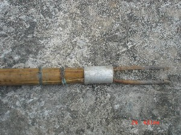 |
mɑlɑrɛo मालारैओ VAR: mɑrɑreɔ मारारेऔ. Etym: Jeru; जेरू. N सं. spear used to kill fish; harpoon; मछली मारने का भाला. SD: tool, औज़ार, hunting & gathering, शिकार एवं संचय सम्बंधी.
mɑmɑ मामा N सं. grandparent; दादा; दादी; नाना; नानी. SD: kin term, सम्बंधी वाचक शब्दावली.
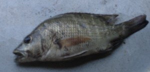 |
mɑr मार VAR: mɑːr माऽर. N सं. a type of fish; एक प्रकार की मछली. SD: fish, मछली.
mɑr मार V क्रि. gossiping, sitting and chatting with people; लोगों का आपस में बैठना, बात करना और गप मारना. ɲ-ut-un-cɑlo-ɲ-ɛr-ɛm mɑr-(k)-o-m ञूतून चालो ञैरैम मारोम. He is sitting and chatting with people. वह लोगों के साथ बैठा बात कर रहा है।.
mɑrɑkele माराकेले VAR: mɑrɑ-kɛle माराकैले. N सं. Andaman Island; own people; own land; अण्डमान द्वीपसमूह; अपने लोग; अपनी ज़मीन. SD: proper noun, व्यक्तिवाचक संज्ञा, place, स्थान.
mɑrɑmikʰik मारामीखीक MORPH: mɑrɑ-mikʰ-ik. N सं. deceased; दिवंगत, स्वर्गवासी. SD: death, मृत्यु सम्बंधी.
mɑrɑmikʰu मारामीखू VAR: mɑrɑːmixu माराऽमीखू. N सं. place where one goes after death; dream; वह जगह जहां पर मरने के बाद जाते हैं; सपना. SD: mythology, पौराणिक.
mɑrɑʈʰi माराठी MORPH: mɑrɑ-ʈʰi. N सं. Andaman; our land; अण्डमान; हमारी ज़मीन. SD: place, स्थान.
mɑrɑʈoŋ माराटोङ MORPH: mɑrɑ-ʈoŋ. N सं. a place in Mayabunder; माया बंदर में एक जगह का नाम. SD: place, स्थान. NT: Mara trees are found here. Original Great Andamanese habitat. Now there is a helipad here. वह जगह जहां ‘मारा’ पेड़ पाए जाते हैं। पहले अण्डमानी समुदाय यहाँ रहता था पर अब जंगल काटकर यहां एक ‘हेलीपेड’ बना दिया गया है।.
|
mɑro1 मारो VAR: mɑːrɔ माऽरौ. N सं. a kind of ant; एक प्रकार की चींटी. Trigona ventralis (Erythrogastra). SD: insect & invertebrate, कीट-पतंग एवं अरीढ़ जीव. SEE: mɑro2 ‘honeybee’ ‘मक्खी, शहद की मारोhm:{2}’; mɑro3 ‘proper name’ ‘व्यक्तिविशेष नाम मारोhm:{3}’.
mɑro2 मारो VAR: mɑːrɔ माऽरौ. N सं. a kind of honeybee; छोटी शहद की मक्खी. SD: insect & invertebrate, कीट-पतंग एवं अरीढ़ जीव. NT: This honeybee lives in pieces of wood. यह लकड़ी के अंदर घर बनाती है।. SEE: mɑro1 ‘ant’ ‘चींटी मारोhm:{1}’; mɑro3 ‘proper name’ ‘व्यक्तिविशेष नाम मारोhm:{3}’.
mɑro3 मारो VAR: mɑːrɔ माऽरौ. N सं. proper name, name of Nao Jr.’s father; व्यक्तिविशेष नाम, नाओ जूनियर के पिता का नाम. SD: proper noun, व्यक्तिवाचक संज्ञा. SEE: mɑro1 ‘ant’ ‘चींटी मारोhm:{1}’; mɑro2 ‘honeybee’ ‘मक्खी, शहद की मारोhm:{2}’.
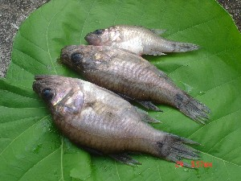 |
mɑrtɑrɑbulu मारताराबूलू MORPH: mɑr-tɑrɑ-bulu. N सं. a kind of fish; एक प्रकार की मछली. SD: fish, मछली.
mɑʈ माट V क्रि. run; भागना. e mɑʈ-eme-b-ɔm ए माट एमे बौम. He runs. वह भागता है।. ŋemɑʈ be ङेमाट बे. You run. तुम दौड़ो।.
mɑʈʰiu माठीऊ Etym: Pujjukar; पुज्जूकर. PRN सर्व. it’s me; मैं हूं. SD: reference, संदर्भ.
mɑyɑ माया N सं. deceased, used for forefathers; दिवंगत; पूर्वज. SD: kin term, सम्बंधी वाचक शब्दावली.
mɑyɑbɔrɔ मायाबौरौ MORPH: mɑyɑ-bɔrɔ. N सं. one who is under the influence of some supernatural power; वह जो किसी अलौकिक शक्ति के प्रभाव में हो. SD: supernatural, अलौकिक.
mɑyɑʈɔŋ मायाटौङ N सं. Boa Sr.’s grandfather, who fought with the Jarawas; बोआ सीनियर का नाना जो जारवा लोगों से लड़ा था. SD: proper noun, व्यक्तिवाचक संज्ञा.
-me -मे SUF प्र. habitual aspect verbal suffix; नित्य. ʈʰu erŋolo-tɑ erŋole-me ठू एरङोलोता एरङोलेमे. I write with a pen. मैं कलम से लिखता हूं।. SD: grammar, व्याकरण. NT: postverbal. उपसर्ग।.
mekʰu मेखू V क्रि. bloom; खिलना.
mel मेल V-INTR अ क्रि. return; लौटना. mɑle-mele माले मेले. We are returning (from somewhere). हम (कहीं से) लौट रहे हैं।. SEE: ekɑmelɑ ‘return’ ‘लौटाना एकामेला ’.
melɑ मेला Etym: Hindi; हिन्दी. ADJ वि. dirty (cloth); गंदा (कपड़ा). SD: attribute, विशेषता.
mele मेले N सं. friend; दोस्त. SD: relationship, सम्बंध. NT: The address term shared by male friends. दोस्तों में प्रयुक्त होने वाला शब्द, जैसे हिन्दी ‘यार’।.
melene मेलेने VAR: ɛ-meleni ऐमेलेनी; e-mele एमेले. ADJ वि. sweet; मीठा. SD: attribute, विशेषता.
meleneɛrkotʰo मेलेनेऐरकोथो MORPH: melene-ɛr-kotʰo. V क्रि. mix sugar; चीनी मिलाना.
meleni मेलेनी VAR: milinoi मीलीनोई. N सं. sugar; चीनी. SD: cooking & food, खाना-पीना.
melibɔm मेलीबौम V क्रि. return; लौटकर आना. ʈʰɑ melibo ɲyo-ɑk ठा मेलीबो ञ्योआक. I returned home. मैं घर लौटकर आया।.
melišun मेलीशून V क्रि. live well; अच्छी तरह जीना.
meŋ- मेङ- CLT क्लिटिक. clitic, first plural subject (inclusive); प्रथम बहुवचन कर्तावाचक क्लिटिक (सम्मिलित). meŋ-ɑmbikʰir cɔkbi-bi ji-k-ɔ मेङामबीखीर चौक्बीबी जीकौ. We ate turtle last morning. हम सबने कल सुबह कछुआ खाया।. SD: grammar, व्याकरण.
meŋɑmboro मेङाम्बोरो MORPH: meŋɑm-boro. PRN सर्व. first plural (inclusive); we all; हम सब (सम्मिलित). meŋɑm bɔro dilli-il ʈʰibitɲom मेङाम बौरो दील्लील ठीबीत्ञोम. We live in Delhi. हम दिल्ली में रहते हैं।. SD: pronominal, सर्वनाम.
meŋercoɖiu मेङेरचोडीऊ MORPH: meŋer-co-ɖiu. ADV क्रि वि. midday, lit. sun on my head; मध्य दोपहरी, शाब्दिक अर्थः सिर के ऊपर सूरज. SD: time, समय.
meŋio मेङीओ PRN सर्व. first plural (inclusive); प्रथम बहुवचन (सम्मिलित). meŋio indiɑn be मेनीओ ईन्दीआन बे. We are Indians. हम भारतीय हैं।. SD: pronominal, सर्वनाम.
meŋiso मेङीसो MORPH: meŋ-iso. VAR: miso मीसो. PRN सर्व. our (alienable); हमारा (पृथक). SD: pronominal, सर्वनाम.
meŋŋot मेङ्ङोत VAR: meŋot मेङोत. PRN सर्व. ours, first plural (inclusive) genitive; we (experiential); हमारा (सम्मिलित). meŋot cɔne be मेङोत चौने बे. We will go. हम जाएंगे।. SD: pronominal, सर्वनाम.
meŋotlɔŋɔ मेङोतलौङौ MORPH: meŋot-lɔŋɔ. N सं. collar bone; गले की हड्डी; हँसली की हड्डी. SD: body part term, शारीरिक अंग शब्दावली.
meŋottɑrɑpuctɑrɑorɔ मेङोत्तारापूचताराओरौ MORPH: meŋot-tɑrɑ-puc-tɑrɑ-orɔ. N सं. money; पैसा. SD: cultural item, सांस्कृतिक सामग्री.
meŋoʈɑrpʰuctɑrɑulibi मेङोटारफूच्ताराऊलीबी MORPH: meŋo-ʈɑr-pʰuc-tɑrɑ-ulibi. N सं. crab-eating monkey; केकड़ा खाने वाला बंदर. SD: animal, जानवर.
meŋɔr मेङौर MORPH: meŋ-ɔr. Etym: Jeru; जेरू. VAR: mo-leŋ मोलेङ. PRN सर्व. first plural (inclusive); हमलोग (सम्मिलित). SD: pronominal, सर्वनाम.
meɲob मेञोब MORPH: meɲo-b. V क्रि. come to me; visit again and again; बार-बार आना. SEE: eɲo ‘come from’ ‘से आना एञो ’.
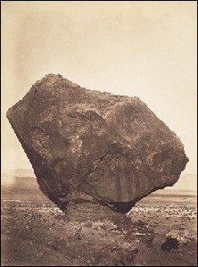 |
meo1 मेओ Etym: Jeru; जेरू. VAR: myo म्यो; miɔ मीऔ; meːo मेऽओ; mɛyo मैयो; meyo मेयो. N सं. rock; चट्टान. SD: natural environment, प्राकृतिक वातावरण. SEE: meo2 ‘stone’ ‘पत्थर मेओhm:{2}’.
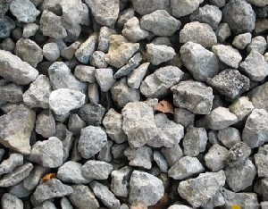 |
meo2 मेओ Etym: Jeru; जेरू. VAR: myo म्यो; miɔ मीऔ; meːo मेऽओ; mɛyo मैयो; meyo मेयो. N सं. stone; पत्थर. SD: natural environment, प्राकृतिक वातावरण. SEE: meo1 ‘rock’ ‘चट्टान मेओhm:{1}’.
meobincɑe मेओबीन्चाए MORPH: meo-bin-cɑe. N सं. rotten mango; सड़ा हुआ आम. SD: attribute, विशेषता.
meocop मेओचोप MORPH: meo-cop. N सं. mirror; शीशा. SD: household, घरेलू. SEE: meɔ ‘glass; stone’ ‘शीशा; पत्थर मेऔ ’.
meːodirim मेऽओदीरीम MORPH: meːo-dirim. N सं. black rock or stone; काली चट्टान या पत्थर. SD: natural environment, प्राकृतिक वातावरण.
meopʰoŋ मेओफोङ MORPH: meo-pʰoŋ. VAR: miofoŋ मिओफोङ. N सं. cave of stone; पत्थर की गुफा. kɔrɔiɲ sɑre tɑrɑ-tɑl meo-pʰoŋ ʈʰibikŋo k-ɔm कौरौईञ सारे ताराताल मेओफोङ ठीबीक्ङो कौम. The dugong lives in the stone caves of the sea. डूगोंग समुद्र की पत्थर की गुफा में रहता है।. SD: natural environment, प्राकृतिक वातावरण.
meorebocɔ मेओरेबोचौ MORPH: meo-re-bocɔ. VAR: meɔ-re-bɔcɔ मेऔरेबौचौ. N सं. pebbles; small stones; कंकड़; छोटा पत्थर. SD: natural environment, प्राकृतिक वातावरण.
meɔ मेऔ N सं. glass; stone; शीशा; पत्थर. SD: household, घरेलू. SEE: meocop ‘mirror’ ‘शीशा मेओचोप ’.
meɔe मेऔए ADJ वि. sour; खट्टा. nunɔ नूनौ. sour fruit. खट्टा फल. SD: attribute, विशेषता.
mẽɔyɖoːb मेंऔयडोऽब MORPH: mẽɔy-ɖoːb. N सं. green mango; हरा आम. SD: edible fruit, खाद्य फल.
mẽɔypʰun मेंऔयफून MORPH: mẽɔy-pʰun. N सं. ripe mango; पका आम. SD: edible fruit, खाद्य फल.
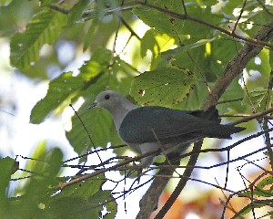 |
merit मेरीत VAR: mirit मीरीत. N सं. grey pigeon; सलेटी कबूतर. SD: bird, पक्षी. NT: There is a belief that this bird calls when a woman is pregnant. ऐसा माना जाता है कि जब कोई स्त्री गर्भवती होती है तो यह कबूतर बहुत शोर मचाता है।. SEE: mirit ‘bird; Ducula aenea’ ‘पक्षी मीरीत ’.
meritutceloi मेरीतूत्चेलोई MORPH: merit-ut-celoi. N सं. smell of a kind of fish; तोता मछली की गंध. SD: attribute, विशेषता.
merɔːbetɑkɑrɑke मेरौऽबेताकाराके MORPH: me-rɔː-be-tɑ-kɑrɑke. V क्रि. bring the canoe up from the water; डोंगी को पानी में से ऊपर चढ़ाना.
merɔːbetɑŋotleke मेरौऽबेताङोतलेके MORPH: me-rɔː-be-tɑ-ŋot-leke. V क्रि. take canoe down into water; पानी में डोंगी उतारो.
mesolobe मेसोलोबे Etym: Bo; बो. V क्रि. let us go; चलो चलें.
meteikʰu मेतेईखू MORPH: metei-kʰu. V क्रि. suck mother’s milk; मां का दूध पीना. o-metei-kʰu-ɔm ओमेतेईखूऔम. He drinks mother’s milk. वह मां का दूध पीता है।.
meteimul मेतेईमूल MORPH: metei-mul. VAR: mettɑy-mul मेत्तायमूल; mɛ-tei-mul मैतेईमूल; mettei मेत्तेई. N सं. breast milk; milk (mother’s); स्तन का दूध; मां का दूध. SD: edible item, खाद्य सामग्री.
meʈʰom मेठोम V क्रि. recline; आराम करना. ʈʰɑ-meʈʰom ठा-मेठोम. I am reclining. मैं लेट रहा हूं।. ʈʰɑ-meʈʰom ɑkɑnom ठा-मेठोम आकानोम. I am sitting with a support. मैं सहारे से बैठा हूं।.
meyototcok मेयोतोतचोक MORPH: meyo-totcok. VAR: miyo-totcuː मीयोतोतचूऽ. N सं. stone, big; बड़ा पत्थर. SD: natural environment, प्राकृतिक वातावरण.
mɛcopi मैचोपी Q परि. all; सभी. SD: quantifier, परिमाण वाचक.
mɛkʰɛŋ मैखैङ N सं. opium; अफ़ीम. SD: edible item, खाद्य सामग्री.
mɛŋer मैङेर PRN सर्व. ours; first plural (inclusive) genitive; हमारा; प्रथम बहुवचन कारक (सम्मिलित). SD: pronominal, सर्वनाम.
mɛŋombo मैङोम्बो DEIXIS डीक्सीस. below us; हमारे नीचे. SD: space, अन्तरिक्ष.
mɛŋotɑrɑpuc मैङोतारापूच MORPH: mɛŋ-ot-ɑrɑ-puc. N सं. our language; हमारी भाषा. SD: people, लोग.
mɛrpʰeʈ मैरफेट MORPH: mɛr-pʰeʈ. VAR: mɛr-pʰɛʈ मैरफैट. DEIXIS डीक्सीस. this side (of the lake, river, nullah), this bank; इस पार (झील, नदी, नाले के), ये किनारा. ʈʰɛ mɛr-pʰɛʈ tɑ tɛr-pʰeʈ ci pʰo be ठै मैर फैट ता तैर फेट ची फो बे. I will not go from this side (of the shore) to that side (of the shore). मैं इस पार से उस पार नहीं जाऊंगा।. SD: reference, संदर्भ.
mɛtɔ मैतौ MORPH: mɛ-tɔ. N सं. our necklace; हमारा हार. SD: costume & adornment, आभूषण एवं श्रृंगार.
mɛʈʰ मैठ V क्रि. recline; सहारा देना.
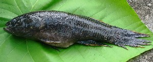 |
mɛʈo मैटो N सं. fish found in sweet spring water; झरने के मीठे जल में पायी जाने वाली मछली. SD: fish, मछली.
mɛxuttɑːwlu मैखूत्ताऽवलू Q परि. third; तीसरा. SD: quantifier, परिमाण वाचक.
mikʰu1 मीखू N सं. a large tree which is never used for making canoes as it has a tendency to sink; एक बड़ा पेड़ जो डोंगी बनाने में प्रयोग नहीं होता क्योंकि उससे डूबने का ख़तरा रहता है. SD: flora, फूल-पत्ती. SEE: mikʰu2 ‘underside of dugong’ ‘डूगोंग का पेट मीखूhm:{2}’.
mikʰu2 मीखू N सं. underside of dugong; डूगोंग का पेट. SD: body part term, शारीरिक अंग शब्दावली. SEE: mikʰu1 ‘tree’ ‘पेड़ मीखूhm:{1}’.
mikʰucɔl मीखूचौल MORPH: mikʰu-cɔl. N सं. middle; right in the middle; मध्य; बीचोबीच. SD: space, अन्तरिक्ष.
mikulu मीकूलू Etym: North Andaman; उत्तरी अण्डमान. N सं. edible roots; जड़ें, खाद्य. SD: flora, फूल-पत्ती.
mil मील V क्रि. shift; move; सरकना.
 |
miliɖu मीलीडू N सं. endangered Nicobarese pigeon; बड़ा निकोबारी कबूतर. Coloenas nicobarica. SD: bird, पक्षी. NT: A big pigeon with a copper-green neck found on Battakh Tapu near Interview Island. It is found in dense broad-leaved evergreen forests away from human habitation. It is stout, short-tailed, with long blue-black, metallic green and copper neck hackles. It walks in straight lines. It eats worms, small shells and tiny stones. To hunt it, nets are placed on the dusty paths where it looks for its food. चमचमाती हरे-तांबई रंग की गर्दन वाला यह मोटा कबूतर इन्टरव्यू द्वीप के पास बतख टापू में पाया जाता है। यह बड़े-बड़े चौड़े पत्ते वाले गहन जंगल में बस्ती से दूर अपना घर बनाना पसंद करता है। सीधी चाल में चलने वाले इस कबूतर का भोजन नन्हें-नन्हें कीड़े, शंख व सीपियां हैं। इसको पकड़ने के लिए भूमि पर जाल बिछाया जाता है ताकि इसे कीड़े खाते हुए पकड़ा जा सके।.
mime मीमे N सं. brother’s wife; भाभी, भाई की पत्नी. SD: kin term, सम्बंधी वाचक शब्दावली. NT: Also used for elderly women. बुजुर्ग महिला को पुकारने का शब्द।.
mimi मीमी Etym: North Andaman; उत्तरी अण्डमान. N सं. mother; any elderly lady; madam; मां; वृद्ध महिला को बुलाने का शब्द; मैडम. ʈʰ-ɑrɑ-lišu-pʰu ʈʰɑ-mimi-pʰu ठारालीशूफू ठामीमीफू. Neither my sister nor my mother (came). न तो मेरी बहन न ही मेरी मां (आई)।. SD: kin term, सम्बंधी वाचक शब्दावली, social organization, सामाजिक व्यवस्था.
mimitɑrɑtom मीमीतारातोम MORPH: mimi-tɑrɑ-tom. N सं. elderly woman, grandmother; बुढ़िया, दादी या नानी. ɑkɑ-mimi-tɑrɑ-tom आकामीमीतारातोम. his elderly woman (grandmother). उसकी बुढ़िया (दादी या नानी). SD: kin term, सम्बंधी वाचक शब्दावली.
mimitoɑtue मीमीतोआतूए MORPH: mimi-to-ɑ-tue. N सं. mother’s brother; मामा. ʈʰ-ɑ-mimi-toɑ-tue ठामीमीतोआतूये. my mother’s brother; my uncle. मेरी मां का भाई; मेरा मामा. SD: kin term, सम्बंधी वाचक शब्दावली.
mimiyɑtɛo मीमीयातैओ MORPH: mimiyɑ-tɛo. N सं. crocodile; मगरमच्छ. SD: reptile, रेंगने वाले जंतु.
mine मीने N सं. brain; दिमाग. meŋer-mine मेङेरमीने. my brain. मेरा दिमाग. SD: body part term, शारीरिक अंग शब्दावली.
minišiyoɲeobi मीनीशीयोञेओबी N सं. our people; हमारे लोग. SD: people, लोग.
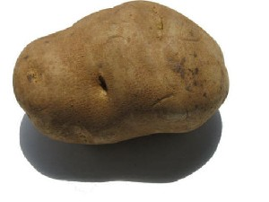 |
mino1 मीनो VAR: minɔ मीनौ. N सं. potato; आलू. minu buɑ kottrɑl jio मीनू बूआ कोत्तराल जीओ. The potato is inside the soil. आलू मिट्टी के अंदर है।. SD: edible item, खाद्य सामग्री. SEE: mino2 ‘tuber’ ‘ट्यूबर मीनोhm:{2}’.
mino2 मीनो Etym: North Andaman; उत्तरी अण्डमान. N सं. a thorny edible tuber; एक कंटीला खाद्य कंद. SD: flora, फूल-पत्ती. SEE: mino1 ‘potato’ ‘आलू मीनोhm:{1}’.
minobɑlɔ मीनोबालौ MORPH: mino-bɑlɔ. N सं. potato creeper; आलू की बेल. SD: flora, फूल-पत्ती.
minocɔfe मीनोचौफे MORPH: mino-cɔfe. N सं. potatoes, lots of; बहुत सारे आलू. SD: edible item, खाद्य सामग्री.
minotumtɔplo मीनोतूमतौपलो MORPH: mino-tum-tɔplo. N सं. a type of potato; एक प्रकार का आलू. SD: edible item, खाद्य सामग्री.
mioeone मीओएओने MORPH: mioe-one. N सं. lemon juice; sour juice; नींबू का रस; खट्टा रस. SD: edible item, खाद्य सामग्री.
mioepʰuŋ मीओएफूङ MORPH: mioe-pʰuŋ. VAR: miyɔe-pʰuŋ मीयौएफूङ. N सं. mango, ripe; पका हुआ आम. SD: edible fruit, खाद्य फल.
miɔe मीऔए N सं. lemon; नींबू. SD: flora, फूल-पत्ती, edible fruit, खाद्य फल.
mirɑ मीरा ADJ वि. jealous; ईर्ष्यालु. SD: attribute, विशेषता.
miriši मीरीशी V क्रि. destroy; बर्बाद करना; विनाश करना.
 |
mirit1 मीरीत N सं. a kind of white pigeon; एक प्रकार का सफ़ेद कबूतर. Ducula aenea. SD: bird, पक्षी. SEE: merit ‘pigeon’ ‘कबूतर मेरीत ’; mirit2 ‘fish’ ‘मछली मीरीतhm:{2}’.
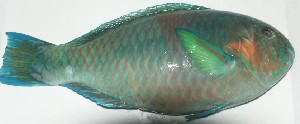 |
mirit2 मीरीत N सं. parrotfish; तोता मछली. SD: fish, मछली. SEE: mirit1 ‘bird’ ‘पक्षी मीरीतhm:{1}’.
mirši मीरशी ADJ वि. uprooted (tree); उखड़े हुए (पेड़). ʈʰibit pʰilel ʈɔŋbi mirši ठीबीत फीलेल टौङबी मीरशी. All the trees have died because of the tsunami. सूनामी की वजह से सारे पेड़ मर गए।. SD: attribute, विशेषता, flora, फूल-पत्ती.
mišuɑmɑi मीशूआमाई MORPH: mišuɑ-mɑi. N सं. king; राजा. SD: people, लोग.
mišuɑmimi मीशूआमीमी MORPH: mišuɑ-mimi. N सं. queen; रानी. SD: people, लोग.
mitɛ1 मीतै N सं. a medium-sized cinnamon-coloured bird; बादामी गर्दन वाला मध्यम आकार का एक पक्षी. SD: bird, पक्षी. SEE: mitɛ2 ‘fly’ ‘मक्खी मीतैhm:{2}’.
 |
mitɛ2 मीतै N सं. Robber fly; रोबर मक्खी. Asilidae. SD: insect & invertebrate, कीट-पतंग एवं अरीढ़ जीव. NT: These flies can be heard between December and January around 3-5 pm, when the sun is about to set. At this time, children are forbidden to kill any animal. रोबर मक्खी साल में सिर्फ़ दिसम्बर-जनवरी में सूर्यास्त के करीब शाम को 3 से 5 बजे के बीच शोर करती है। ऐसा माना जाता है कि इस दौरान किसी पशु का शिकार नहीं करना चाहिए।. SEE: mitɛ1 ‘bird’ ‘पक्षी मीतैhm:{1}’.
 |
miʈʰe मीठे N सं. Andaman Cuckoo Dove; एक प्रकार का अण्डमानी कबूतर. Macropygia rufipennis. SD: bird, पक्षी. NT: This edible pigeon is about the size of a domestic pigeon, though it has a longer tail. It is an endemic resident of the dense broad-leaved evergreen forests of the Andaman and the Nicobar Islands. There is a legend about this bird called ‘Maya Mithe’. Jiro Mithe was a young boy from the Jeru tribe who was very fond of hunting in the sea. He was once swallowed by a Bol fish but was rescued by his Jeru friends who killed the fish. Mithe came out alive, but his limbs had become numb and soft as he had been squeezed in the stomach of the Bol. The Bol was later cut into small pieces and roasted for eating. However one of its parts, called ‘totale’, swelled and swelled and burst with such force that all the folks, including the children, became birds. It is believed that each and every Andamanese bird was once an Andamanese person. इसको अण्डमानी लोग खाते हैं। यह आम कबूतर की तरह दिखता है पर इसकी पूंछ ज़्यादा लम्बी होती है। अण्डमान और निकोबार का ख़ास कबूतर जो घने-चौड़े पत्ते वाले जंगलों में अपना घर बनाता है। मीठे कबूतर की एक लोककथा बहुत प्रचलित है जिसके अनुसार ‘जीरो मीठे’ जेरो जनजाति का एक जवान लड़का था जिसको समुद्र में शिकार करना बहुत पसंद था। एक बार शिकार करते समय उसे ‘बोल’ मछली ने निगल लिया तब उसके दोस्तों ने उस बोल मछली को मारकर मीठे को बचाया। मछली का पेट फाड़कर मीठे को ज़िंदा निकाला गया लेकिन बोल मछली के पेट में दबकर पिचकने की वजह से उसके अंग सुस्त और नरम पड़ गए थे। बाद में उस बोल मछली को छोटे-छोटे टुकड़ों में काटने के बाद भूनकर खाया गया। परन्तु उस मछली का एक अंग ‘टोटाले’ फूलते-फूलते इतने ज़ोर से फटा कि वहां मौजूद सब लोग बच्चों समेत पक्षी बन गए। ऐसा माना जाता है कि हर अण्डमानी पक्षी पहले कभी अण्डमानी व्यक्ति था।.
mixuccol मीख़ूच्चोल MORPH: mixuc-col. DEIXIS डीक्सीस. in between; के बीच में. SD: grammar, व्याकरण.
miyɔe मीयौए N सं. a sour fruit; एक प्रकार का खट्टा फल. SD: edible fruit, खाद्य फल.
miyɔeʈɔŋ मीयौएटौङ MORPH: miyɔe-ʈɔŋ. N सं. lemon tree; नींबू का पेड़. SD: flora, फूल-पत्ती.
mo1 मो PRN सर्व. first plural agentive; प्रथम बहुवचन (हम). stret-ɑk mo ot-cɔne-k-ɔm स्ट्रेट ताक मो ओत्चौनेकौम. We will go to Strait. हम स्ट्रेट जाएंगे।. SD: pronominal, सर्वनाम. SEE: mo2 ‘fly’ ‘मक्खी मोhm:{2}’; mo3 ‘keep; take’ ‘रखना; लेना मोhm:{3}’; mo4 ‘small’ ‘छोटा मोhm:{4}’.
mo2 मो N सं. fly; मक्खी. SD: insect & invertebrate, कीट-पतंग एवं अरीढ़ जीव. SEE: mo1 ‘first plural agentive’ ‘प्रथम बहुवचन मोhm:{1}’; mo3 ‘keep; take’ ‘रखना; लेना मोhm:{3}’; mo4 ‘small’ ‘छोटा मोhm:{4}’.
mo3 मो V क्रि. keep; take; रखना; लेना. ʈʰ-u-moko ठूमोको. I took. मैंने लिया।. ɲ-ɑrɑ-mo ञारामो. You kept this. तुमने ये रखा।. ʈʰ-e-mo ठेमो. I took (it). मैंने (इसे) लिया।. SEE: mo1 ‘first plural agentive’ ‘प्रथम बहुवचन मोhm:{1}’; mo2 ‘fly’ ‘मक्खी मोhm:{2}’; mo4 ‘small’ ‘छोटा मोhm:{4}’.
mo4 मो VAR: mu मू. ADJ वि. used of small living creatures; छोटे जीवित प्राणी के लिये प्रयोग होता है. SD: quantifier, परिमाण वाचक. SEE: mo1 ‘first plural agentive’ ‘प्रथम बहुवचन मोhm:{1}’; mo2 ‘fly’ ‘मक्खी मोhm:{2}’; mo3 ‘keep; take’ ‘रखना; लेना मोhm:{3}’. NT: The lexeme ‘mo’ has a sort of diminutive meaning and refers to creatures that are small in size.
moːe मोऽए Etym: Bo. N सं. wood used for making outrigger, the boya; उलण्डी/बोया बनाने में प्रयोग आने वाली लकड़ी. SD: boat related, नाव सम्बंधी, flora, फूल-पत्ती.
moɛr मोऐर Etym: Bo. PRN सर्व. you (pl. honorific); आप लोग. ir-luro bi-moɛr bɑnɛm ईरलूरो बीमोऐर बानैम. Do not touch the burning wood. जलती हुई लकड़ी को हाथ न लगाएं।. SD: pronominal, सर्वनाम.
mok मोक VAR: muk मूक. V क्रि. leave; छोड़ना. ɛt moke ऐत मोके. Leave (it). छोड़ दो (इसे)।.
molɛŋ मोलैङ PRN सर्व. you; second dual exclusive; तुम दो जने. molɛŋ tɑ le bekʰɑ मोलेङ ता ले बेखा. You people stay idle. तुम लोग बेकार रहते हो।. SD: pronominal, सर्वनाम.
molo मोलो V क्रि. demand; मांगना.
moŋɑ मोङा MORPH: moŋ-ɑ. PRN सर्व. our (inalienable); हमारा (अहस्तान्तरित). SD: pronominal, सर्वनाम.
moropʰo मोरोफो N सं. a small black crab; छोटा काला केकड़ा. SD: marine, समुद्री.
motcor मोत्चोर MORPH: m-ot-cor. N सं. smile, my; मेरी मुस्कराहट. SD: activity & event, कार्यकलाप.
motkɔbo मोतकौबो MORPH: m-ot-kɔbo. N सं. skin, my; मेरी त्वचा. SD: body part term, शारीरिक अंग शब्दावली.
moʈɑrpʰuc मोटारफूच MORPH: mo-ʈɑr-pʰuc. N सं. This is what the Great Andamanese call themselves; ग्रेट अण्डमानी स्वयं को इस नाम से बुलाते हैं. SD: people, लोग.
mɔcɔ1 मौचौ VAR: mocɔ मोचौ; moco मोचो. ADJ वि. infamous; बदनाम. SD: attribute, विशेषता. SEE: mɔcɔ2 ‘rooster’ ‘मुर्गा मौचौhm:{2}’.
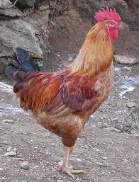 |
mɔcɔ2 मौचौ VAR: mocɔ मोचौ; moco मोचो. N सं. rooster; मुर्गा. SD: bird, पक्षी. SEE: mɔcɔ1 ‘infamous’ ‘बदनाम मौचौhm:{1}’.
mɔcɔmulu मौचौमूलू MORPH: mɔcɔ-mulu. N सं. egg, of hen; मुर्गी का अंडा. SD: bird, पक्षी.
mɔcɔtotbec मौचौतोतबेच MORPH: mɔcɔ-tot-bec. N सं. feathers, of hen; मुर्गी के पंख. SD: bird, पक्षी.
mɔr मौर N सं. creeper; लता. SD: flora, फूल-पत्ती.
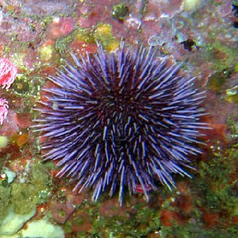 |
mɔrɔi1 मौरौई VAR: mɔrɔe मौरौए. N सं. sea urchin; जलसाही. SD: marine, समुद्री. SEE: mɔrɔi2 ‘water current’ ‘पानी की धारा मौरौईhm:{2}’.
mɔrɔi2 मौरौई N सं. water current; पानी की धारा. SD: natural environment, प्राकृतिक वातावरण. SEE: mɔrɔi1 ‘sea urchin’ ‘जलसाही मौरौईhm:{2}’.
mɔrɔk मौरौक N सं. small snail, lives in creeks; खाड़ी में पाए जाने वाला नन्हा घोंघा. SD: marine, समुद्री.
mɔːrɔk मौऽरौक N सं. oyster; सीपी. SD: marine, समुद्री.
mɔrɔpʰu मौरौफू V क्रि. be hungry; भूख लगना.
mɔtkocuɑ मौत्कोचूआ MORPH: mɔt-ko-cuɑ. N सं. divine figure; one above us, God; कोई दिव्य शक्ति; जो हमारे ऊपर है, भगवान. SD: mythology, पौराणिक.
mːreːmo मिऽरेऽमो N सं. bush; झाड़ी. SD: flora, फूल-पत्ती.
muku मूकू N सं. points of the island; द्वीप के सिरे. SD: natural environment, प्राकृतिक वातावरण.
mukʰu मूखू N सं. summit; चोटी. SD: space, अन्तरिक्ष.
mukui मूकूई Etym: Jeru; जेरू. VAR: modɑ मोदा. Etym: Bea; बेया. N सं. a kind of flower; एक प्रकार का फूल. SD: flora, फूल-पत्ती. NT: A winter-flower which blooms between mid-November and mid-February. सर्दी का फूल जो मध्य नवम्बर से मध्य फरवरी में खिलता है।.
mul मूल N सं. cream of milk; मलाई. SD: edible item, खाद्य सामग्री.
mulu मूलू ADJ वि. sugarless; फीका. milɛne-pʰu-kʰude ʈʰu-metei-mulu pʰu-kʰu मीलैने फू खूदे ठू मेतेईमूलू फूखू. There is no sugar, I will not drink the milk. दूध फीका है, मैं दूध नहीं पीऊंगा।. SD: attribute, विशेषता.
mulutɑtʰu मूलूताथू MORPH: mulu-tɑ-tʰu. V क्रि. lay eggs; अण्डे देना.
muntɑšolo मून्ताशोलो N सं. journey; सफ़र. SD: life, जीवन.
munu मूनू N सं. a kind of red-eyed crab; एक प्रकार का लाल आंख वाला खतरनाक केकड़ा. SD: marine, समुद्री. NT: This crab is dangerous. यह केकड़ा खतरनाक होता है।.
muŋeliu bɔm मूङेलीऊ बौम MORPH: mu-ŋeliu bɔm. V क्रि. ask someone’s name; नाम पूछना.
muŋili मूङीली MORPH: muŋi-li. ADV क्रि वि. for a while; for a moment; कुछ पल के लिए. SD: time, समय.
mur मूर VAR: muːr मूऽर. N सं. foam; झाग. SD: natural environment, प्राकृतिक वातावरण.
murɡitʰire मूरगीथीरे MORPH: murɡi-tʰire. N सं. chicken; चूज़ा, मुर्गी का बच्चा. SD: bird, पक्षी. NT: Murgi < Hindi. मुर्गी < हिन्दी।.
muʈok मूटोक V क्रि. blowing whistle; सीटी मारना.
muxuye मूखूये N सं. father’s sister; बुआ. SD: kin term, सम्बंधी वाचक शब्दावली.
myotɑrɑɲyo म्योताराञ्यो MORPH: myo-tɑrɑ-ɲyo. N सं. house, made of stone; पत्थर से बना हुआ पक्का घर. SD: habitat, रहन-सहन.